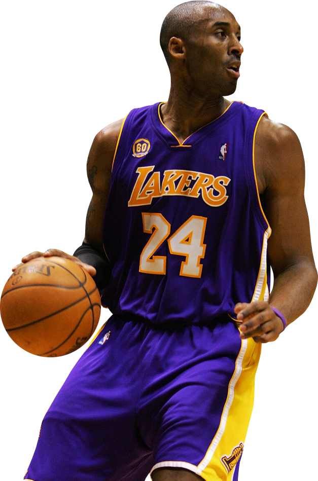

B
L
A
C
K

Kobe Bryant on the court during a game.
Early Life
- Kobe was born in Philadelphia, Pennsylvania on August 23, 1978.
- His dad, Jellybean Joe Bryant, was a pro basketball player, too.
- Kobe attended Lower Merion High School in a suburb of Philadelphia. He was a standout basketball player and earned several awards including the Naismith High School Player of the Year.
- Kobe decided not to attend college and went straight into professional basketball.
- He was the 13th player taken in the 1996 draft. The Charlotte Hornets drafted Kobe, but immediately traded him to the Los Angeles Lakers
- Kobe was only 17 years old when he was drafted. He had turned 18 by the time his first NBA season started.
Career
- Kobe won 5 NBA championships with the LA Lakers.
- The first 3 championships were early on in his career (2000-2002).
- All-Star center Shaquille O'Neal was his teammate at the time.
- After Shaq was traded, it took some time for the Lakers to rebuild, but they won two more championships, one in 2009 and another in 2010.
- His high school team won the state championship his senior year.
- He has won two Olympic Gold medals for basketball in 2008 and 2012.
- He was the NBA slam dunk champion in 1997.
NBA Records
- He has also scored more points, more free-throws, and made more turnovers than any other guard in history.
- He's one of only four players to win 15 All-NBA team honours.
- He was also one of only four to win nine All-Defensive First Team honors.
- He scored the most points ever in a single arena.
- At 37, he became — and still is — the youngest player ever to reach 33,000 points.
M
A
M
B
A